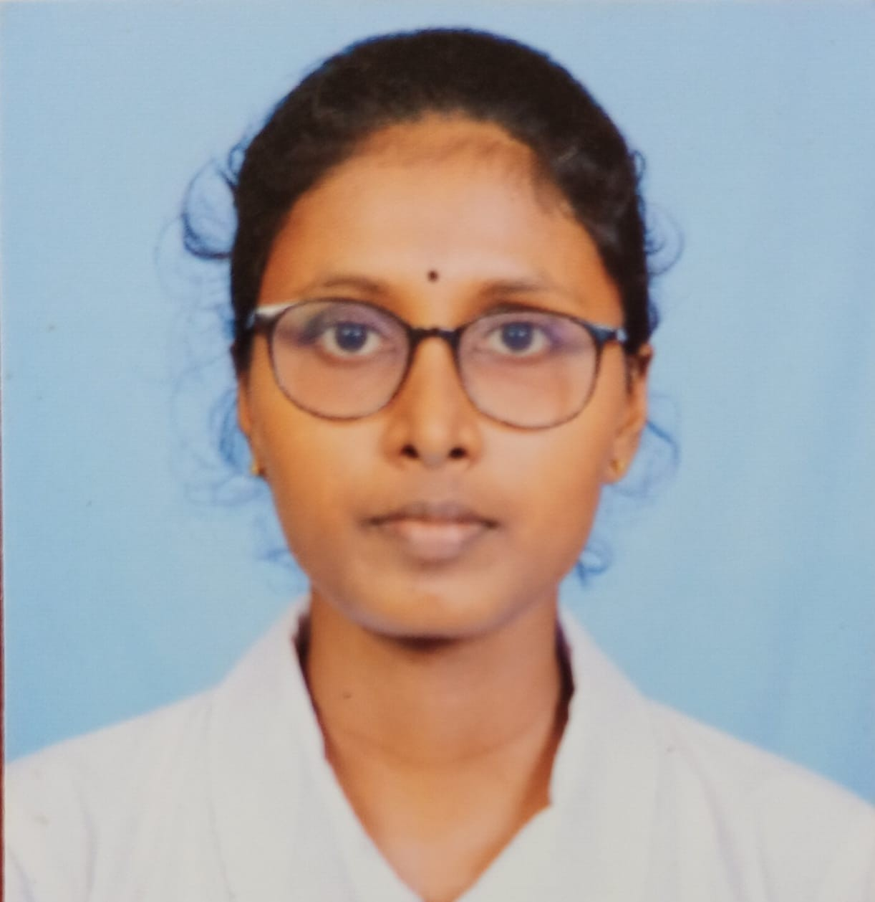

About me
I'm motivated, detail-oriented, and continuously learning modern technologies to build impactful software and digital products.
I'm an Information and Communication Technology undergraduate passionate about UI/UX design,Frontend development. I enjoy turning practical ideas into user-friendly digital experiences.

I'm motivated, detail-oriented, and continuously learning modern technologies to build impactful software and digital products.
Building practical web experiences, improving user journeys, and developing strong UI UX Designing.